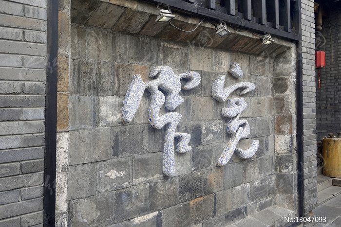
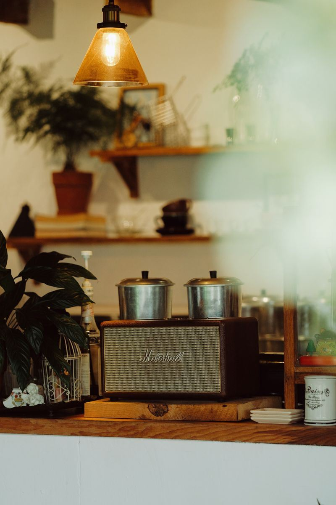
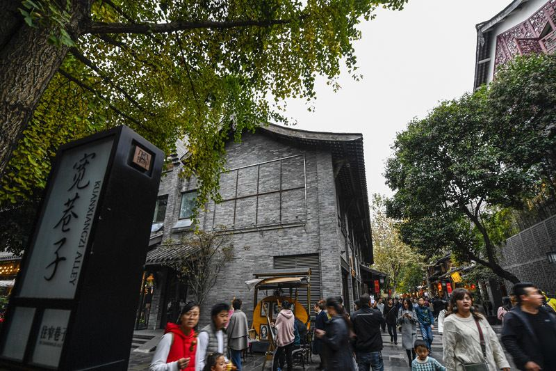
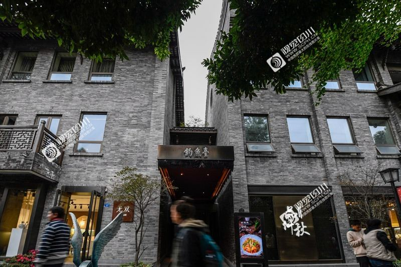
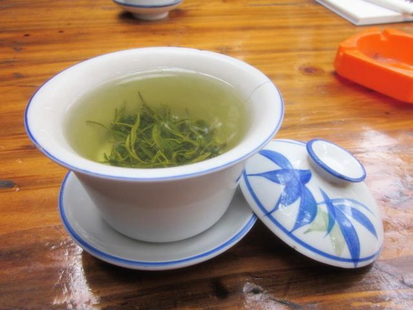

Kuanzhai · 历史文化街区
成都的城市会客厅，一砖一瓦皆是故事
宽巷子、窄巷子、井巷子三条老街，青砖黛瓦间藏着老成都的记忆，也盛开着新潮文创的花朵。
Introduction
宽窄巷子是成都遗留下来的较成规模的清朝古街道，由宽巷子、窄巷子、井巷子平行排列的老街及其间的四合院落群组成，占地约280亩。这里是「最成都」的生活切片：茶香、川味、川剧变脸与新潮店铺交织，走着走着，就懂了成都。
街区完全免费开放，地铁4号线宽窄巷子站直达，全天可逛。
川西民居院落与大牌旗舰店、设计师买手店同框共舞。
川剧变脸、蜀绣工坊、糖画吹糖人，市井非遗随处可见。
Deep Dive

宽巷子曾是达官贵人的聚居地，如今保留着老成都最完整的院落生活意象：盖碗茶馆、川菜馆、市井小吃与掏耳朵手艺人齐聚，是「宽」出闲情的地方。

窄巷子以老成都院落改造闻名，既有传统四合院，又挤满了国际品牌、设计师店与精品咖啡馆。「窄」的是巷子，宽的是创意。

井巷子在三条巷子中保存最原始，取名自巷口的古井。这里民俗氛围最浓：青砖墙上镶嵌着老成都生活的铜版浮雕，市井烟火扑面而来。

建议从午后逛到夜幕降临：先喝茶看戏，再逐巷探店，入夜欣赏灯火中的街区，一次体验两种气质。
FAQ
Key Points
宽巷子看闲适、窄巷子看潮流、井巷子看烟火。
街区开放无需门票，地铁直达，适合自由行。
下午至夜晚最佳，与人民公园串联行程更完整。
宽巷子「院落」字墙、井巷子浮雕墙最适合留影。

坐在院落里的竹椅上，一碗盖碗茶、一段川剧变脸，就是最地道的老成都时光。巷内的茶馆价格亲民，适合坐下来慢慢感受。
窄巷子聚集了大量设计师买手店、独立咖啡馆与文创空间，传统院落里生长出年轻的创意，是成都「新与旧」共生的最好写照。